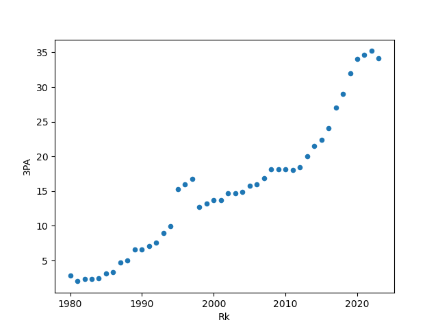

This graph describes the 3 Pointer attempted per game from each season since the addition of it in 1979-78.
At the beginning it seemed to be quite flat for a few years, the from 1985, there has been a gradual rise.
And from 2012 a huge jump of the attempt per game was taken and now it lies at about 35 3PA per game,
more than 7 times the number of attempts in 1980, in just 4 decades.
